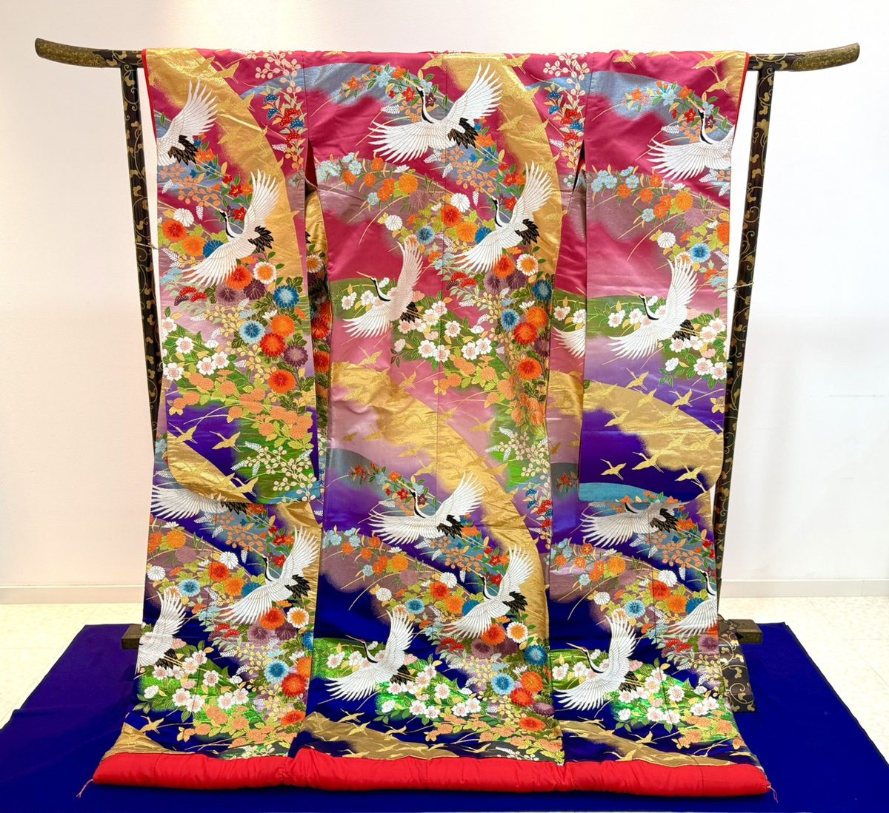
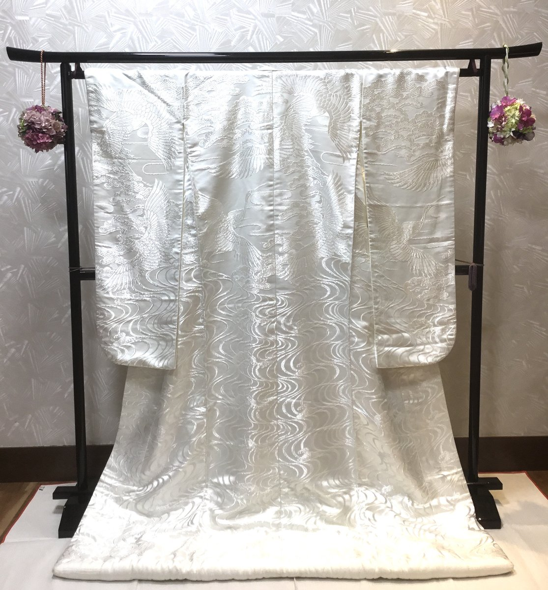
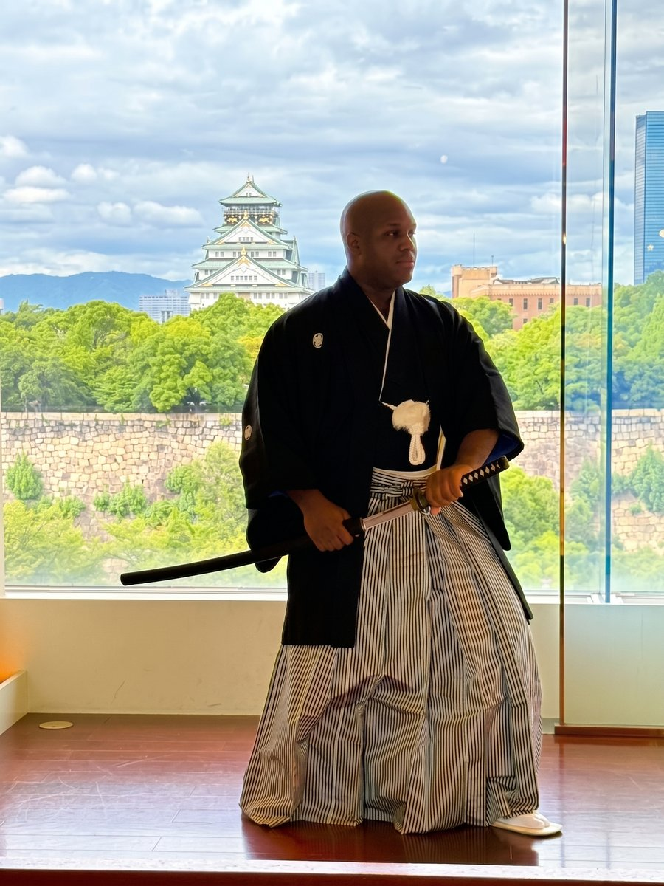
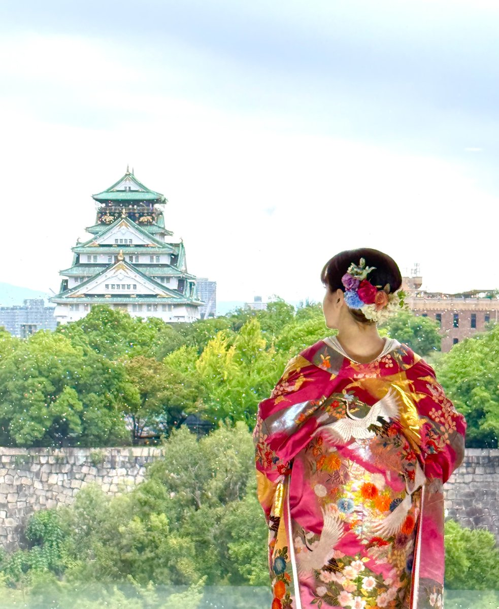

From Sengoku warlords to the shoguns of Edo: two garments born in the age of the samurai still grace Japanese weddings today.
In a nutshell
- Uchikake
- A bride’s robe worn over a kimono, with gold-thread embroidery. Originally the formal wear of samurai women.
- Montsuki hakama
- A groom’s wedding attire and Japan’s most formal menswear, in black with five family crests.
Contents
I
Born in the age of the samurai
The uchikake began as formal wear for women of samurai families. Its name means “draped over”: it is not tied with a sash, but worn like a coat over a kimono.
In the Azuchi-Momoyama period, when Toyotomi Hideyoshi ruled Japan, high-ranking samurai women began to wear it. In the Edo period it became the formal dress of samurai wives, then spread to wealthy townspeople and was established as bridal wear.
II
A wish in every thread
Silk is embroidered with gold and colored thread. The crane means long life and a happy marriage; pine, bamboo and plum wish for long life and abundance. Every motif is a blessing for the bride.
There are two classic styles: the pure white shiromuku, a symbol of purity, worn at the ceremony, and the colorful iro-uchikake in reds and golds, often worn at the reception.


III
What is a montsuki hakama? Wearing the samurai’s crest
The montsuki hakama is the most formal dress for Japanese men. A black kimono and haori jacket carry five family crests: one on the back, one on each sleeve and one on each side of the chest. Striped hakama trousers complete the look.
Crests are said to have begun with Heian-period nobles, who marked their carriages with them. Later, Sengoku warlords flew them on banners to tell friend from foe. Toyotomi Hideyoshi bore the paulownia; Tokugawa Ieyasu, founder of the Edo shogunate, bore the triple hollyhock. To wear a crest is to carry your family’s name.

IV
Side by side: the formal wear of a Japanese wedding
The bride in uchikake, the groom in montsuki hakama: the most formal attire for each, both born in the age of the samurai.
The montsuki spread to townsmen in the Edo period, and even after Western clothes became official formal wear in the Meiji era, it kept its place at weddings and ceremonies. It has endured for centuries.
V
Wear it with the castle in view
Osaka Castle was built by Toyotomi Hideyoshi. The Tokugawa shogunate later rebuilt it, and most of the stone walls you see today date from that era.
- 1583Toyotomi Hideyoshi begins building Osaka Castle
- 1600Battle of Sekigahara: Tokugawa Ieyasu wins
- 1603Tokugawa Ieyasu becomes shogun and founds the Edo shogunate
- 1615Summer Siege of Osaka: the castle falls and the Toyotomi clan perishes
- 1620–29The Tokugawa shogunate rebuilds the castle
- 1868The Edo period, some 260 years long, ends; the Meiji era begins

KKR Hotel Osaka stands just south of Osaka Castle Park. Here you can wear the uchikake or the montsuki hakama, alone or as a couple, with the castle in view. You need not be getting married: come and wear the formal dress of the samurai age as a memory of your trip.